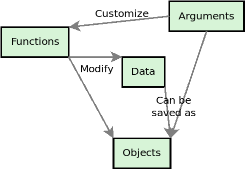
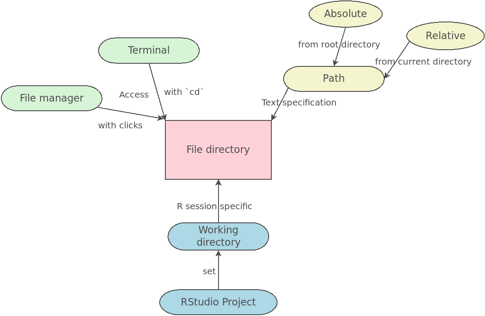
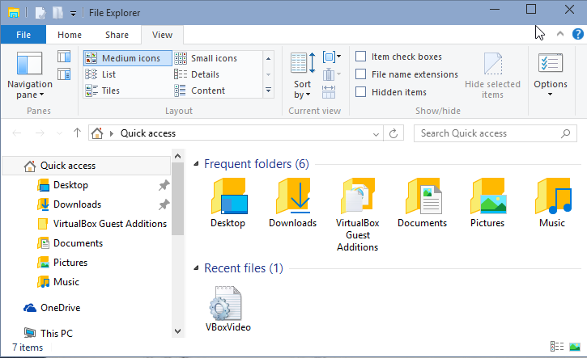
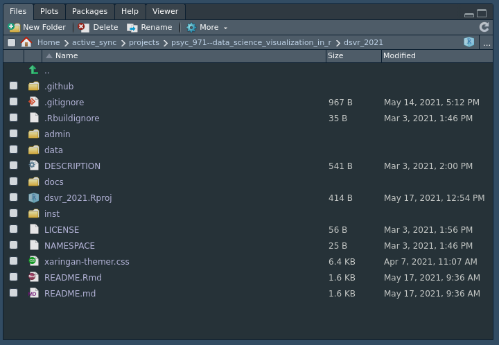
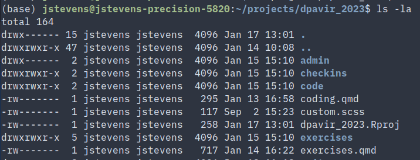
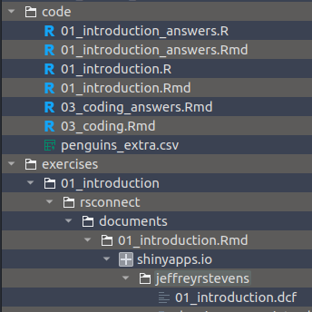
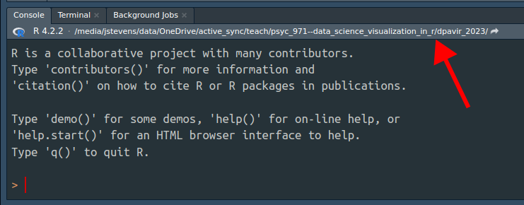
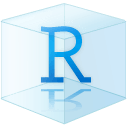
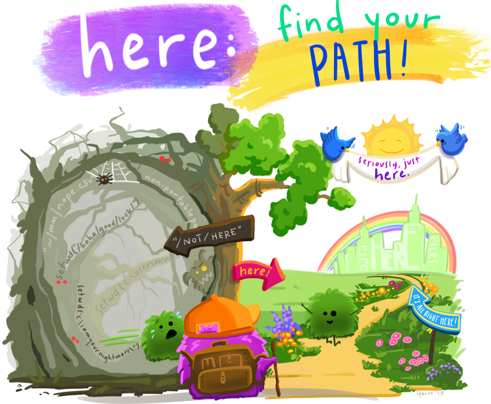

/home/jstevens/github/dpavir2025/slides
├── 00_getting_started.html
├── 00_getting_started.mp4
├── 00_getting_started.qmd
├── 01_introduction.html
├── 01_introduction.qmd
├── 02_rstudio.html
├── 02_rstudio.qmd
├── 03_coding.html
├── 03_coding.qmd
├── 04_workflows.qmd
├── 04_workflows.rmarkdown
├── 04_workflows_files
│ ├── execute-results
│ │ └── html.json
│ └── libs
│ ├── clipboard
│ │ └── clipboard.min.js
│ ├── quarto-html
│ │ ├── light-border.css
│ │ ├── popper.min.js
│ │ ├── quarto-syntax-highlighting-dark-f8dc6eab18fde03278982b0b35885446.css
│ │ ├── tabby.min.js
│ │ ├── tippy.css
│ │ └── tippy.umd.min.js
│ └── revealjs
│ ├── dist
│ │ ├── reset.css
│ │ ├── reveal.css
│ │ ├── reveal.esm.js
│ │ ├── reveal.esm.js.map
│ │ ├── reveal.js
│ │ ├── reveal.js.map
│ │ └── theme
│ │ ├── fonts
│ │ │ ├── league-gothic
│ │ │ │ ├── LICENSE
│ │ │ │ ├── league-gothic.css
│ │ │ │ ├── league-gothic.eot
│ │ │ │ ├── league-gothic.ttf
│ │ │ │ └── league-gothic.woff
│ │ │ └── source-sans-pro
│ │ │ ├── LICENSE
│ │ │ ├── source-sans-pro-italic.eot
│ │ │ ├── source-sans-pro-italic.ttf
│ │ │ ├── source-sans-pro-italic.woff
│ │ │ ├── source-sans-pro-regular.eot
│ │ │ ├── source-sans-pro-regular.ttf
│ │ │ ├── source-sans-pro-regular.woff
│ │ │ ├── source-sans-pro-semibold.eot
│ │ │ ├── source-sans-pro-semibold.ttf
│ │ │ ├── source-sans-pro-semibold.woff
│ │ │ ├── source-sans-pro-semibolditalic.eot
│ │ │ ├── source-sans-pro-semibolditalic.ttf
│ │ │ ├── source-sans-pro-semibolditalic.woff
│ │ │ └── source-sans-pro.css
│ │ └── quarto-a72b68f23337d6c747b4277c226ad139.css
│ └── plugin
│ ├── highlight
│ │ ├── highlight.esm.js
│ │ ├── highlight.js
│ │ ├── monokai.css
│ │ ├── plugin.js
│ │ └── zenburn.css
│ ├── markdown
│ │ ├── markdown.esm.js
│ │ ├── markdown.js
│ │ └── plugin.js
│ ├── math
│ │ ├── katex.js
│ │ ├── math.esm.js
│ │ ├── math.js
│ │ ├── mathjax2.js
│ │ ├── mathjax3.js
│ │ └── plugin.js
│ ├── notes
│ │ ├── notes.esm.js
│ │ ├── notes.js
│ │ ├── plugin.js
│ │ └── speaker-view.html
│ ├── pdf-export
│ │ ├── pdfexport.js
│ │ └── plugin.yml
│ ├── quarto-line-highlight
│ │ ├── line-highlight.css
│ │ ├── line-highlight.js
│ │ └── plugin.yml
│ ├── quarto-support
│ │ ├── footer.css
│ │ ├── plugin.yml
│ │ └── support.js
│ ├── reveal-menu
│ │ ├── menu.css
│ │ ├── menu.js
│ │ ├── plugin.yml
│ │ ├── quarto-menu.css
│ │ └── quarto-menu.js
│ ├── search
│ │ ├── plugin.js
│ │ ├── search.esm.js
│ │ └── search.js
│ └── zoom
│ ├── plugin.js
│ ├── zoom.esm.js
│ └── zoom.js
├── 05_rmarkdown.qmd
├── 06_datatypes.qmd
├── 07_datastructures.qmd
├── 08_importing.qmd
├── 09_validating.qmd
├── 10_selecting.qmd
├── 11_mutating.qmd
├── 12_piping.qmd
├── 13_filtering.qmd
├── 14_summarizing.qmd
├── 15_pivoting.qmd
├── 16_separating.qmd
├── 17_mergingcolumns.qmd
├── 18_mergingrows.qmd
├── 19_numbers.qmd
├── 20_strings.qmd
├── 21_patterns.qmd
├── 22_factors.qmd
├── 23_dates.qmd
├── 24_functions.qmd
├── 25_iteration.qmd
├── 26_grammar1.qmd
├── 27_grammar2.qmd
├── 28_themes.R
├── 28_themes.qmd
├── 29_color.qmd
├── 30_histograms.R
├── 30_histograms_answers.R
├── 31_boxplots.R
├── 31_boxplots_answers.R
├── 32_barcharts.R
├── 32_barcharts_answers.R
├── 33_associations.R
├── 33_associations_answers.R
├── 34_timeseries.R
├── 34_timeseries_answers.R
├── 35_categories.R
├── 35_categories_answers.R
├── 36_axes.R
├── 36_axes_answers.R
├── 37_annotating.R
├── 37_annotating_answers.R
├── 39_tables.Rmd
├── 39_tables.pdf
├── 39_tables.tex
├── 40_publications.qmd
├── 41_advrmarkdown.qmd
├── 42_quarto.qmd
├── 43_statistics.R
├── _freeze
│ └── 04_workflows
│ ├── execute-results
│ │ └── html.json
│ └── libs
│ ├── clipboard
│ │ └── clipboard.min.js
│ ├── quarto-html
│ │ ├── light-border.css
│ │ ├── popper.min.js
│ │ ├── quarto-syntax-highlighting-dark-f8dc6eab18fde03278982b0b35885446.css
│ │ ├── tabby.min.js
│ │ ├── tippy.css
│ │ └── tippy.umd.min.js
│ └── revealjs
│ ├── dist
│ │ ├── reset.css
│ │ ├── reveal.css
│ │ ├── reveal.esm.js
│ │ ├── reveal.esm.js.map
│ │ ├── reveal.js
│ │ ├── reveal.js.map
│ │ └── theme
│ │ ├── fonts
│ │ │ ├── league-gothic
│ │ │ │ ├── LICENSE
│ │ │ │ ├── league-gothic.css
│ │ │ │ ├── league-gothic.eot
│ │ │ │ ├── league-gothic.ttf
│ │ │ │ └── league-gothic.woff
│ │ │ └── source-sans-pro
│ │ │ ├── LICENSE
│ │ │ ├── source-sans-pro-italic.eot
│ │ │ ├── source-sans-pro-italic.ttf
│ │ │ ├── source-sans-pro-italic.woff
│ │ │ ├── source-sans-pro-regular.eot
│ │ │ ├── source-sans-pro-regular.ttf
│ │ │ ├── source-sans-pro-regular.woff
│ │ │ ├── source-sans-pro-semibold.eot
│ │ │ ├── source-sans-pro-semibold.ttf
│ │ │ ├── source-sans-pro-semibold.woff
│ │ │ ├── source-sans-pro-semibolditalic.eot
│ │ │ ├── source-sans-pro-semibolditalic.ttf
│ │ │ ├── source-sans-pro-semibolditalic.woff
│ │ │ └── source-sans-pro.css
│ │ └── quarto-a72b68f23337d6c747b4277c226ad139.css
│ └── plugin
│ ├── highlight
│ │ ├── highlight.esm.js
│ │ ├── highlight.js
│ │ ├── monokai.css
│ │ ├── plugin.js
│ │ └── zenburn.css
│ ├── markdown
│ │ ├── markdown.esm.js
│ │ ├── markdown.js
│ │ └── plugin.js
│ ├── math
│ │ ├── katex.js
│ │ ├── math.esm.js
│ │ ├── math.js
│ │ ├── mathjax2.js
│ │ ├── mathjax3.js
│ │ └── plugin.js
│ ├── notes
│ │ ├── notes.esm.js
│ │ ├── notes.js
│ │ ├── plugin.js
│ │ └── speaker-view.html
│ ├── pdf-export
│ │ ├── pdfexport.js
│ │ └── plugin.yml
│ ├── quarto-line-highlight
│ │ ├── line-highlight.css
│ │ ├── line-highlight.js
│ │ └── plugin.yml
│ ├── quarto-support
│ │ ├── footer.css
│ │ ├── plugin.yml
│ │ └── support.js
│ ├── reveal-menu
│ │ ├── menu.css
│ │ ├── menu.js
│ │ ├── plugin.yml
│ │ ├── quarto-menu.css
│ │ └── quarto-menu.js
│ ├── search
│ │ ├── plugin.js
│ │ ├── search.esm.js
│ │ └── search.js
│ └── zoom
│ ├── plugin.js
│ ├── zoom.esm.js
│ └── zoom.js
├── _quarto.yml
└── custom.scssWorkflows
Jeff Stevens
2025-01-29
Review: Mental model of coding
Mental model of file directories
Directories/folders
File system
Structure of directories and files stored on your computer
File managers
- Apps/GUIs to interact with file system
- Windows File Explorer
- MacOS Finder

File managers
- RStudio

Terminals
- Interact with file system through prompt/command line
- If not familiar with terminal, read primer for Windows or MacOS

Mental model of file directories
Paths
Paths
Convert tree structure to character string
-
exercises/01_introduction/rsconnect/documents/01_introduction.Rmd/shinapps.io/jeffreyrstevens/01_introduction.dcf

Absolute paths
From root directory
Starts with drive letter or /
Windows:
C:\users\jeff\Documents\projects\dpavir_2025\R\Linux and MacOS:
/home/jeff/projects/dpavir_2025/R/
Relative paths
From current directory
-
Starts with first subdirectory name
- If in
projects/, relative path toR/isdpavir_2025/R
- If in
- Use relative paths!
- Why?
Changing directories
Change directories with cd
/home/jeff/projects/dpavir_2025/
- To move from
dpavir_2025/torsconnect/, typecd exercises/01_introduction/rsconnect/
Go backwards
Move backwards with cd ..
One set of
..for each directory going backwardsTo move from
rsconnect/to01_introduction/,
typecd ..To move from
01_introduction/tocode/,
typecd ../../code/
Let’s try it!
- Go to Files in RStudio
- Add folder named
testand a subfolder namedR. - Go to Terminal.
- Type
lsordir. - How do we go to
test/? - How do we go back?
- How do we go to
test/R/? - How do we go back up to
test/?
Mental model of file directories
Workflows
Project directory structure

Build a consistent directory structure
Why?
Consistency for you
Adapt structure to your needs or lab requirements
Consistency for the lab
Make a template directory
Working directories
Base directory for R session
-
View your working directory
- Console:
getwd() - RStudio: top of Console

- Console:
What is your working directory?
RStudio Projects
Convenient system to:
Set working directory
Open files you had open before closing RStudio
Focus on relative paths
Enable version control
Use them! Always!

RStudio Projects
- Let’s create an RStudio Project

RStudio Projects
- Create an RStudio Project in the existing
test/directory
Create your typical project structure
Use the terminal to change directories in your project
Project working directories
{here}: The package that sets your working directory to the RStudio Project root directory
read_csv(here("data/a.csv"))
